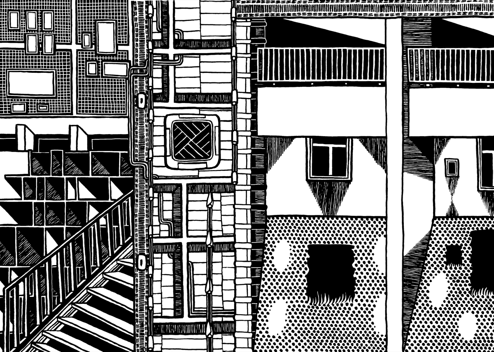
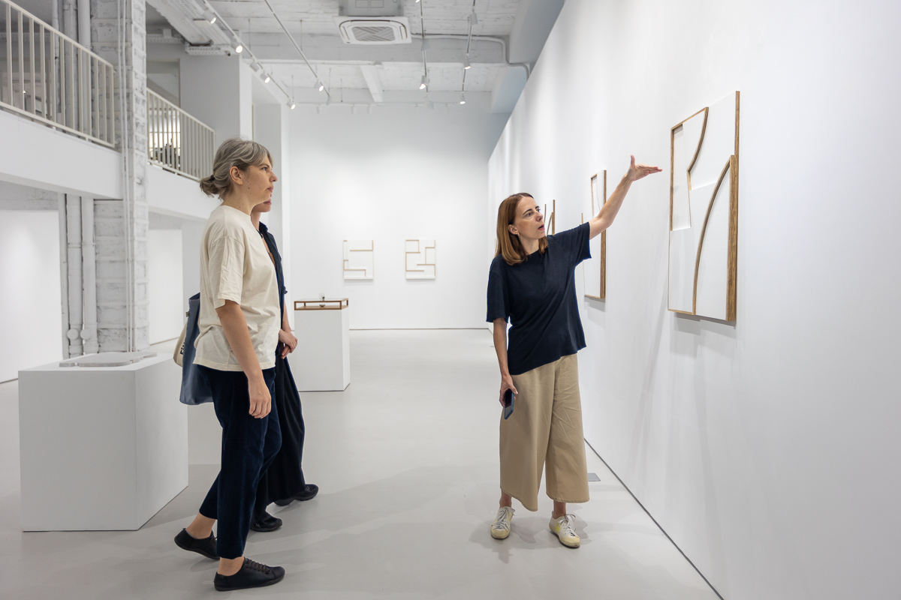
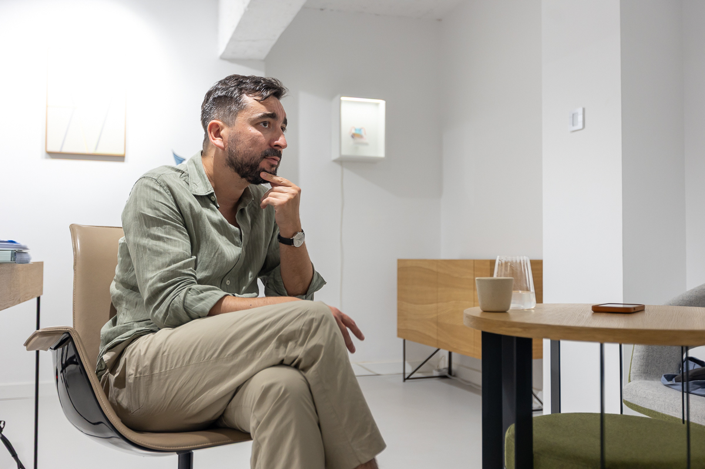
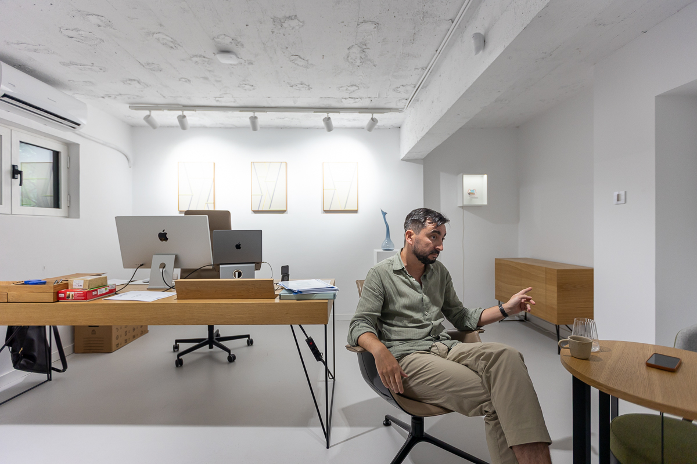
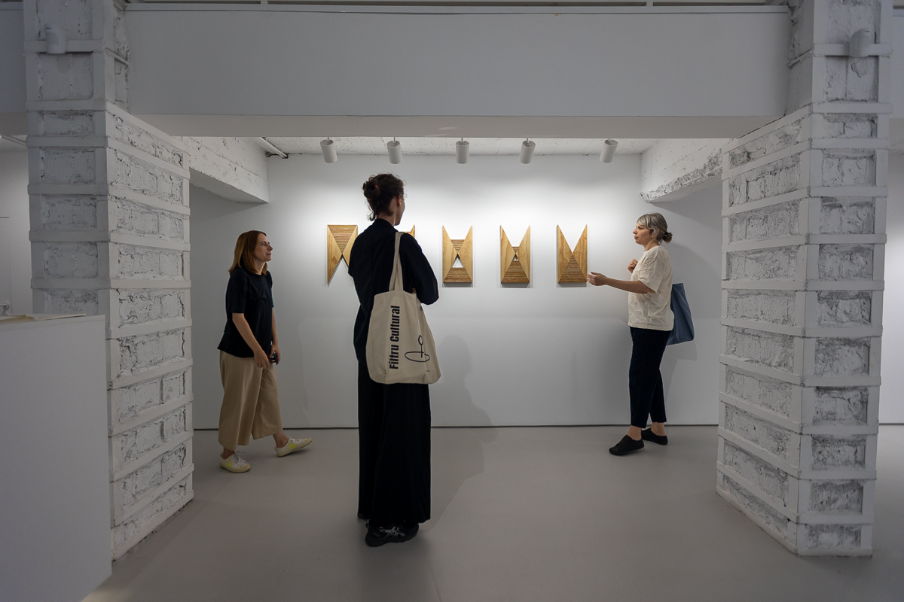

Despre cartierul Floreasca, Irina Tulbure, istoric al arhitecturii, afirma că este un cartier hibrid, din mai multe puncte de vedere: e presărat deopotrivă cu arhitectură rurală și urbană, pendulează între stalinism și modernism, nu e nici în centru, nici la periferie. Deși a integrat câteva vile interbelice, cartierul a fost construit în mare parte la finalul anilor ’50 și începutul anilor ’60. Treptat, a luat înfățișarea unui cvartal (denumit ulterior microraion) în care locuitorii puteau găsi toate facilitățile de care aveau nevoie — magazine, grădinițe, școli, cabinete medicale, spații verzi. Primele blocuri, construite de-o parte și alta a străzii Ceaikovski, sunt scunde, 3-4 etaje, iar grădinile din jurul lor devin cu timpul o marcă a cartierului. Țesutul urban al acestei zone păstrează trama de străzi interbelică și lotizarea făcută la începutul anilor ’40 de arh. Duiliu Marcu. Prin asta, Floreasca diferă de microraioanele comuniste construite ulterior, fără nicio negociere cu istoricul locului (Militari, Balta Albă, Tineretului etc.).
După moartea lui Stalin, în 1953, în linie cu tendința mai largă de modernizare a regimului, în cartierele nou-construite apar instituții culturale de masă „de tip nou” și spații comerciale dedicate odihnei și distracției (cafenele, cofetării). În cazul cartierului Floreasca, vechiul club muncitoresc a fost înlocuit de un cinema cu ecran lat, iar cofetăria nu a întârziat nici ea să apară.
Odată cu deschiderea Cinemascop Floreasca, la începutul anilor ’60, locuitorii primeau așadar și un spațiu de loisir. Clădirea devenise un fel de reper al modernității clamate, în acel punct, de regim. Programul sălii de cinema rămâne greu de găsit, dar se pare că nu erau difuzate doar filme de propagandă. Din 1997, fostul cinema nu mai funcționează, dar parcul îi poartă în continuare numele pe Google Maps. În prezent, este în pericol de demolare pentru a fi înlocuit cu un bloc de 5 etaje, așa cum avertizează Grupul de inițiativă Floreasca Civică.
Spațiile comerciale de pe laturile lungi ale parcului au rămas, dar și-au schimbat oferta — am găsit aici un restaurant cu profil italian, o alimentară cum nu prea mai există în oraș, cafenea, farmacie, agenție de pariuri, salon de înfrumusețare, magazin de înghețată, centru de print.
Singurul spațiu cultural din cartier, Galeria GAEP se află la parterul unui bloc de 3 etaje și are vedere directă spre parc. Alte spații dedicate artei contemporane din nordul capitalei sunt galeriile strânse în incinta Combinatului Fondului Plastic, Atelierele Scânteia și Muzeul MARe, dar toate sunt vecini îndepărtați ai „cartierului-grădină” Floreasca.
Ajunși la numărul 8 pe strada Garibaldi, am sunat la interfon. Ioana Chira, directoare de conținut a GAEP, ne-a deschis și ne-a făcut un mic tur al expoziției găzduite în acel moment de galerie, Concretion, în care erau prezentate lucrări ale artistului brazilian Felipe Cohen. Primele lucruri care m-au izbit au fost minimalismul și cvasi-imaculatețea noului spațiu al galeriei. Geometric, reliefurile lui Cohen se potriveau perfect în acest white cube reinterpretat de peste 300mp și 5m înălțime. Nimic nu perturba întâlnirea dintre privirile noastre și operele artistului brazilian. Retrospectiv, aș spune să se crea de minune acel efect pe care teoreticienii white cube-ului îl numesc „privire dezinteresată” sau atmosferă muzeală. Ceea ce a contribuit substanțial la crearea acestui efect a fost închiderea vitrinei printr-un perete ce urcă până la ferestrele superioare. Din stradă, spațiul principal de expunere nu poate fi văzut și viceversa. Însă, odată ce ajungi înăuntru, configurația acestuia are un impact inițial destul de puternic.
Pe lângă spațiul de expunere, sediul nou al GAEP include o bibliotecă și o supantă unde se află birourile echipei. Demarat în 2023, proiectul de reamenajare a păstrat elemente ce amintesc de magazinul de stofe și mercerie ce funcționase inițial la parterul blocului. Stâlpii de rezistență încorsetați de o structură metalică și ferestrele înguste aflate la cota supantei au traversat deceniile și astăzi iau parte la tipul de display pe care galeria dorește să îl construiască pentru vizitatori. Aceste elemente ar fi trebuit să îmblânzească „perfecțiunea clinică a unui white cube tradițional”, cum spunea Andrei într-un articol consacrat noului spațiu al galeriei în revista Igloo.
După mini turul sub ghidajul Ioanei, am urcat în biroul lui Andrei, singurul spațiu închis al galeriei, separat prin uși din sticlă și metal de zona de birouri și de spațiul expozițional. Lumina rămâne totuși aceeași, la fel și temperatura. Prin ferestrele situate la câțiva metri înălțime de sol, vedeam coroanele copacilor din jur. Cu toate acestea, nu reușeam să reperez intensitatea luminii de afară. Asimptotic, atmosfera din galerie tinde către cea a unui cub alb, unde „alb” stă pentru o anume epurare a experienței estetice de zgomotul străzii și de variațiile luminii naturale.
Orice galerist lucrează constant la intersecția dintre două lumi mai degrabă străine una de cealaltă, „lumea inspirației artistice și lumea comerțului” (Moureau și Sagot-Duvauroux, 2016). Din biroul lui Andrei, puteam cuprinde într-o singură privire acest amestec de contemplație și comerț: paradoxul în care funcționează orice galerie comercială, încă de la apariție. La picioarele noastre se deschide cubul alb în care operele de artă sunt prezentate ca valoroase în sine, în timp ce, urcând la nivelul intermediar, intrăm în lumea comerțului, iar aceleași opere devin produse de vânzare. Acest paradox structural este vizibil, de obicei, în arhitectura oricărei galerii: există mai mereu o separație între un spațiu „din față”, destinat discursului artistic și legitimării acestuia, și un spațiu „din spate”, unde se fac afaceri. Toate galeriile de artă presupun această conlocuire între sacru și profan, cum spunea sociologul olandez Olav Velthius.
Galeria GAEP are o istorie de 12 ani. Într-o primă etapă, s-a numit Eastwards Prospectus și a urmărit promovarea artiștilor din Europa Centrală și de Est. Din 2019, și-a asumat o misiune internațională în sens larg. Dincolo de activitatea de promovare și expunere, în perioada 2022-2024, galeria a găzduit laboratoare și expoziții desfășurate în cadrul celor patru ediții ale proiectului de mentorat pentru artiști români emergenți, Accelerator. Finanțarea a fost asigurată de granturi SEE, programul RO-CULTURA și, în cel de-al doilea an, de fonduri AFCN. În paralel cu această muncă de mentorat, galeria s-a ocupat și de restaurare, contribuind la conservarea a 26 de colaje ale artistului Mircea Stănescu, proiect finanțat prin fonduri AFCN și fonduri private.
Programul galeriei a fost mereu interdisciplinar, artiștii expuși lucrând cel mai adesea cu mai multe tipuri de medii (pictură, desen, fotografie, video, instalație etc.). Printre artiștii români și moldoveni reprezentați de-a lungul anilor de GAEP se numără: Pavel Brăila, Cătălin Pîslaru, Sebastian Moldovan, Mihai Plătică, Raluca Popa, Marilena Preda Sânc, Răzvan Anton și, bineînțeles, Mircea Stănescu. De anul acesta, lista este completată de Vlad Albu, Roberta Curcă și Vlad Nancă.
Galeria organizează periodic două tipuri de evenimente în jurul expozițiilor noi: un preview dedicat colecționarilor și vernisajul deschis publicului larg. Motivul separării celor două ne-a fost explicat de Andrei: „Le-am separat de mulți ani, pentru că avem mult prea multă lume la vernisaj și nu mai putem să mai facem tururi ghidate cu colecționari. Obiectivul nostru de activitate e să facem vânzări. Și să oferim o experiență puțin mai intimă, să spunem. Și spațiul nou are un efect de wow. Și e foarte bine că e așa.”
Dincolo de tururi ghidate și evenimente private dedicate clienților sau colecționarilor. Din 2022, GAEP a lansat o inițiativă nouă, Art Set, direcție de business prin care galeria interacționează în mod sistematic cu mediul corporate. În prezent, Art Set asigură un procent important din veniturile galeriei și este în plină expansiune.
Cuvântul „galerie” provine din latina medievală. În secolul XIV, în franceză, galerie însemna „un portic întins”, adică un spațiu deschis, dar acoperit, umbros, aflat în interiorul sau exteriorul unei clădiri. Sensul de clădire menită să găzduiască și să expună artă a apărut undeva în 1590, se pare. Galeria Uffizi, din Florența, ar fi printre cele mai vechi astfel de configurații: deși fusese construită pentru a găzdui birouri administrative, ea a devenit treptat un muzeu privat al familiei de Medici. Totul a început la finalul secolului XVI, cu ultimul etaj al clădirii. Ce e limpede încă de la început este că aceste spații private dedicate picturii și sculpturii erau locuri în care, teoretic, treceai printr-o inițiere, sub ghidajul gazdei.
Galeriile de artă deschise publicului larg și destinate comerțului apar, în principal, în Franța, în a doua jumătate a secolului al XIX-lea, odată cu prăbușirea autorității estetice a Salonului și a Școlii Beaux-Arts. Părăsind cadrul oficial, anumiți artiști (cum este cazul impresioniștilor) se organizează singuri și devin, într-un sens, proprii lor antreprenori. Alții, începând cu secolul XX, sunt preluați de nou-apărutele galerii gestionate de marchands-entrepreneurs, cum îi numea socioloaga Raymonde Moulin: comercianți de artă cu aptitudini antreprenoriale. Cei din urmă devin esențiali pentru noua configurație: ei sunt cei care inovează, își asumă riscuri, construiesc cariere pentru artiști noi, deschid noi tipuri de piețe etc. Rolul lor în așa-numita „lume a artei” seamănă cu cel al unui editor. Cu alte cuvinte, dincolo de funcția economică pe care o îndeplinesc, galeriștii-antreprenori descoperă talente, construiesc cariere, operează un triaj.
Din câte se pare, piața contemporană de artă reflectă „convenția de originalitate” mai largă a epocii actuale. Practic, am trecut de la o piață a operelor, cum era cazul în secolul XIX, la o piață în care ceea ce valorează sunt „numele artiștilor”. Artistul și practica sa ocupă locul pe care altă dată îl ocupa opera per se. Mai mult, ceea ce contează sunt inovația, autenticitatea și unicitatea practicii artistice în ansamblu, nu doar a unei opere izolate. Or, toate acestea sunt de obicei propuse spre validare la târgurile internaționale de artă — adevărate instituții din anii ’60 încoace. Iar cei care vin cu propunerile sunt acele galerii care-și asumă (și) rolul de „descoperitori de talente” (Moureau și Sagot-Duvauroux, 2016).
În paradigma estetică actuală, valoarea unei opere de artă nu mai rezidă în vreo proprietate intrinsecă cu care ar fi înzestrată, ci este considerată a fi un construct social. Legitimitate artistică este oferită astăzi de alte instanțe decât cele academice, iar galeriile joacă un rol important. Vidul de putere apărut în urma descentralizării și a decăderii autorităților tradiționale ce botezau o operă drept valoroasă sau genială a fost treptat umplut de critici, conservatorii din muzee, artiștii înșiși, galeriști-antreprenori și colecționarii mari (uneori membri ai consiliilor de administrație ale muzeelor, cum este în cazul MoMA). Verdictul acestor jurați nu e mereu același, ceea ce oglindește uneori conflictul dintre piață și sensul actului artistic.
Aceste câteva repere teoretice se oglindesc în bună măsură în felul în care Andrei înțelege conceptul de galerie de artă. Pe de-o parte, el crede în rolul formator, de tastemaker, al celei din urmă. Din acest punct de vedere GAEP pare a-și fi atins scopul: „Pot să spun că, în 12 ani, am format o nouă generație de colecționari în România — colecționari care, practic, au descoperit arta contemporană prin noi. Au descoperit artiști, i-au cumpărat, au învățat despre piața de artă, au înțeles cum funcționează”. Pe de altă parte, o galerie ar trebui să își reprezinte pe termen lung artiștii, nu doar să-i invite pentru o colaborare punctuală pe durata unui proiect. Nu în ultimul rând, o galerie trebuie să ofere o „experiență de retail de lux”: toate detaliile sunt importante, de la felul în care ești primit în galerie, la configurația spațială cu care acesta își învăluie vizitatorii, până la plicurile și ramele folosite pentru producție și vânzări. Conceptul de experiență este central, iar piața cafelei de specialitate îi oferă lui Andrei o analogie la îndemână: „E experiența de a fi într-un spațiu. Nu trebuie să fie despre bogăție — atenție, luxul nu e despre asta. Luxul e că te duci într-un loc în care simți că cineva are grijă de tine. Luxul e să te duci într-un loc unde cineva îți face o inimioară în ceașcă. Avem nevoie ca oamenii să aibă grijă de noi. Oricând intri într-o galerie de artă — deși tinde să fie un spațiu intimidant, cu oameni ocupați care discută între ei — tot trebuie să existe ceva de felul acesta”.
În urma unui master de management cultural la Paris și a reconversiei profesionale către antreprenoriat cultural, Andrei a ajuns să înființeze GAEP. Ulterior acestei formări și a experienței adunate efectiv în primii ani în care a condus galeria, Andrei ne-a prezentat câteva dintre direcțiile pe care le consideră importante în gestionarea unei galerii comerciale. Aspectul central este accesibilitatea. De altfel, din acest motiv, galeria s-a mutat din cartierul Mântuleasa în Floreasca: „Geografia orașului face ca totul să se întâmple în această zonă, în nord — ca să ajungi pe strada Plantelor la ora șapte, când e un vernisaj sau un preview, uneori faci o oră cu mașina. Mi-am dat seama că oamenii care veneau din zona Pipera sau de la Promenada, unde aveau sediile companiilor lor, făceau un efort foarte mare ca să ajungă la galerie. Rezultatul era că veneau destul de rar — o dată sau de două ori pe an. Acum vin la toate evenimentele. Oamenii care sunt la 5-10 minute de mine, evident că vor veni la toate expozițiile, dacă sunt cu adevărat interesați. (…) Ca să poți genera impact, ai nevoie de iterație. Ăsta e un domeniu al eșecului, nu al succesului garantat — domeniul cultural. Ca să ai succes, trebuie să eșuezi în fiecare zi, să faci multe întâlniri, cu mulți oameni, să le explici, să le explici, să le explici. Iar ca să faci multe întâlniri, trebuie să-ți creezi oportunitatea să le faci — adică trebuie să fii relativ aproape.” În București, instituții culturale precum MNAC presupun, din păcate, „bariere de accesibilitate”, nefiind integrate în mod organic în logica orașului. La capătul opus se află un loc ca Centrul „Georges Pompidou” din Paris, instituția fiind înconjurată de spațiu public și străzi pietonale.
Cartierul Floreasca oferă și nenumărate restaurante unde Andrei poate merge alături de clienții săi după un tur ghidat, de exemplu. Acest lucru este și el foarte important: „totul trebuie să fie foarte seamless. Nu trebuie să devină obositor să mergi la restaurant. Să mai mergem câte o jumătate de oră cu mașina, știi?”. Cu toate acestea, galeria GAEP s-a confruntat și cu anumite limite ulterior mutării în cartierul Floreasca: nu a mai avut sens participarea la circuite precum Noaptea Galeriilor sau Doi Joi deoarece nu mai ajungeau prea mulți vizitatori.
O altă fațetă a accesibilității rezidă în arhitectura clădirii ce găzduiește galeria. Dincolo de inconvenientele ce țineau de profilul cartierului istoric, sediul din Plantelor era mai puțin accesibil și în alt sens: din stradă, nu știai că te afli lângă o galerie de artă pe care o poți vizita cu ușurință. Iar apartamentul din vilă nu avea continuitatea celui actual: „Acesta e un spațiu continuu și mai mare — mai ușor de modulat, mai accesibil. Acolo, în plus, trebuia să urci — intrai în curte, apoi urcai. Aici e mult mai permeabil totul. Ai mai mulți vizitatori, oameni care vin cu copii. S-a văzut asta imediat ce ne-am mutat”.
Revenind la exemplul Parisului, merită menționată în acest punct o observație a lui Raymonde Moulin, una dintre primele autoare de sociologie a pieței de artă. Ea pune în evidență diferența dintre vechile străzi-vitrină de pe malul stâng al Senei și noile galerii ce încep să apară, ca urmare directă a deschiderii Centrului Pompidou, pe malul drept, mai precis în cartierul Beaubourg-Marais-Bastille, în foste spații artizanale și semi-industriale. În Marais, mai nimic nu se dezvăluia trecătorilor obișnuiți direct din stradă. Accesul în galeriile de artă presupunea un întreg „parcurs de inițiere” cum îl numește Moulin: trebuia să cotești din strada principală, să traversezi o mică curte interioară sau un portic, să urci niște scări, să cotești din nou și abia apoi, departe de spațiul neinițiat al străzii, să ajungi în spațiul inițiat și inițiatic al artei. Pare că traseul GAEP este inversul celui sesizat de Moulin: galeria a trecut de la un spațiu inaccesibil neinițiaților, la un spațiu relativ mai deschis — galeria păstrează totuși un sistem cu interfon, ceea ce condiționează permeabilitatea dintre spațiul de expunere și strada propriu-zisă.
Încă un aspect punctat de Andrei vizează atât galeriile comerciale, cât și alte inițiative culturale — necesitatea de a construi un public-client: „Încearcă să-ți creezi o audiență de oameni care te poate susține (…) Pentru mine, important e ca artiștii cu care lucrez să trăiască, măcar parțial, din ce produc — să aibă un public. Mă gândesc că, în general, cultura ar trebui să fie despre audience building. Altfel, singurul obiectiv rămas al unui proiect e să fie proiect, și ca oamenii din el să fie remunerați”.
Deși e de acord cu faptul că subfinanțarea domeniului cultural este cauzată, pe jumătate, de lipsa unei strategii de țară în acest sens, Andrei este convins că soluția stă mai degrabă în antreprenoriat: „Cred că doar prin antreprenoriat — aplicând niște principii de bază, având o viziune clară, lucrând cu perseverență pe termen lung pentru anumite obiective — poți schimba ceva. La noi e multă precaritate în domeniul cultural: facem proiecte, dar habar n-avem ce se va întâmpla dincolo de orizontul proiectului respectiv. Nu e ok să lucrezi așa. Poți să faci proiecte, dar încearcă să le pui într-un cadru mai larg.” Într-o notă mai puțin pragmatică, cultura ar avea și rolul de a crea punți reale între oameni, de a-i scoate pe aceștia din fața ecranelor, crede Andrei. Din acest punct de vedere, ea este „future proof”: nu va putea fi înlocuită de IA.
La ieșirea din galerie, m-am bucurat să descopăr că soarele încă nu apusese. Parcul Cinema Floreasca era plin: copiii se jucau de zor, iar vecinii sporovăiau în voie pe bănci. La plecare, cartierul-grădină al Bucureștiului mi-a lăsat impresia unui loc familiar și primitor. Aș reveni oricând cu plăcere, mai ales că nu am descoperit încă grădinile dintre blocuri sau parcelările Cornescu și Drumul cu Tei, despre care au scris cei de la Studio Zona.
Moulin, Raymonde (cu colaborarea Pascalinei Costa), L'Artiste, l'institution et le marché, col. „Art, histoire, société”, Paris, Flammarion, 1992.
Moureau, Nathalie; Sagot-Duvauroux, Dominique, Le marché de l'art contemporain, Paris, La Découverte, ediția 2016 (col. „Repères”).
Galenson, David W.; Jensen, Robert, „Careers and Canvases: The Rise of the Market for Modern Art in the Nineteenth Century”, NBER Working Paper, nr. 9123, National Bureau of Economic Research, septembrie 2002.
Maxim, Juliana, The Socialist Life of Modern Architecture: Bucharest, 1949–1964, Londra/New York, Routledge, 2019.
Tudora, Ioana, „Avem un cartier! Cum procedăm? Despre Floreasca ca patrimoniu construit”, Revista Monumentelor Istorice, RMI 2-3/2018-2022, Dosar tematic, pp. 32-51. https://www.revistamonumenteloristorice.ro/fisiere/RMI-2-3_2019-2022_032.pdf
Voinea, Andrei Răzvan (coord. editorial); Mihail, Andrei; Șalaru, Maria; Calotă-Popescu, Irina; Băncescu, Irina; Dragomir, Mircea (cercetare), Arhitectura nostalgiei: Istoria cartierului Floreasca (1895-1968), Studio Zona, raport de cercetare, proiect co-finanțat de AFCN, 2025. https://asz.ro/wp-content/uploads/2025/08/Raport-de-cercetare-Floreasca_web.pdf



